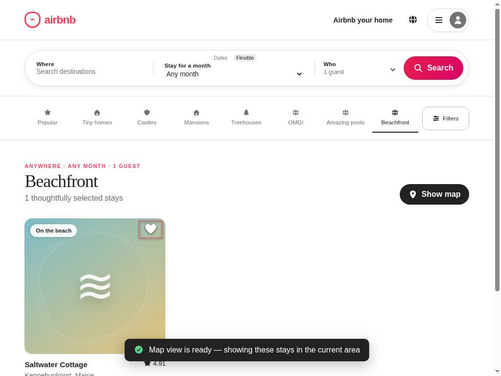
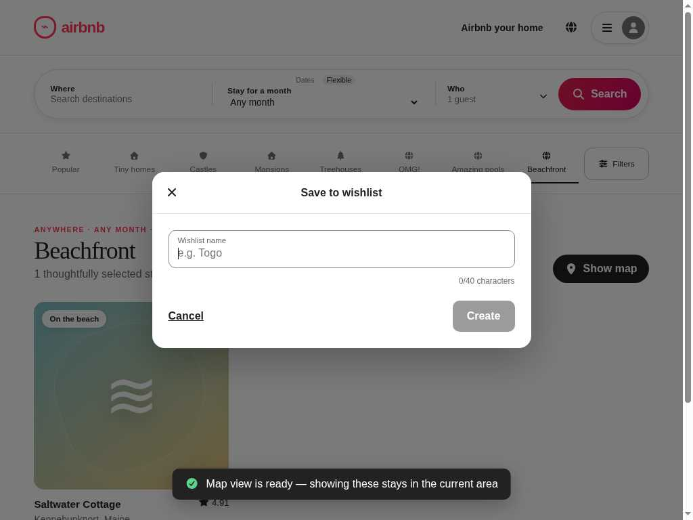
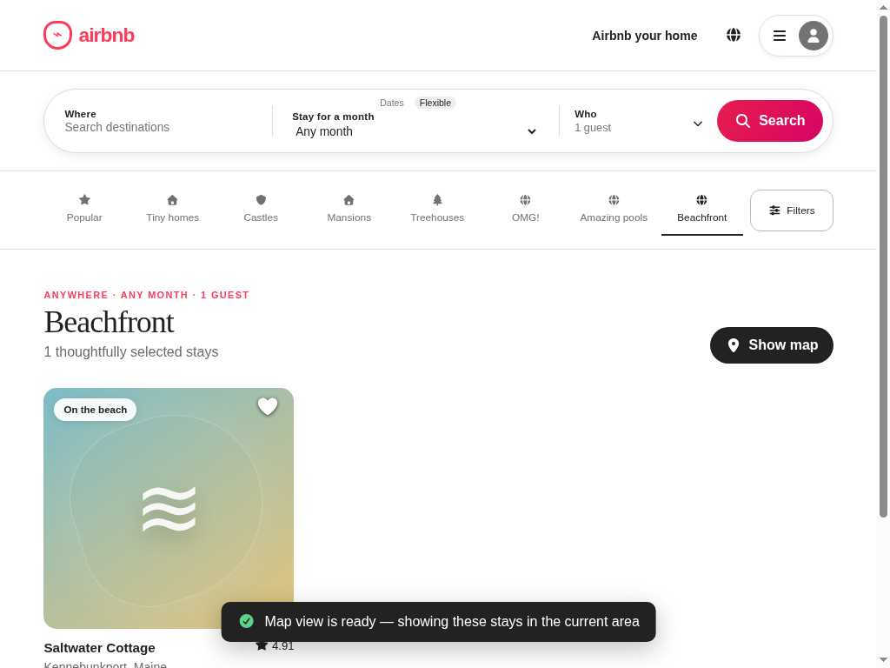

State 1
Heart button focused

activeTag = BUTTON · no dialog
Modal focus return
The same heart button can still receive focus. Escape closes the
modal, but focus settles on BODY.
Temporal contract
G(bound_modal_escape_closes(d,i) -> F_[0,500ms] focus_is_exact_invoker(i))
always(() =>
m1ExactInvokerReturnContractHolds(
m1FocusReturnObservation.current));Three evidence-bound states
No added focus box; the legacy trace does not carry focus geometry.

activeTag = BUTTON · no dialog

activeTag = INPUT · dialog present

activeTag = BODY · dialog closed
Expected
Focus goes back to the exact eligible button that opened the modal.
Observed
The modal is closed and no replacement modal exists, but the exact invoker is not focused.
Mentor check
Stored only in this browser.